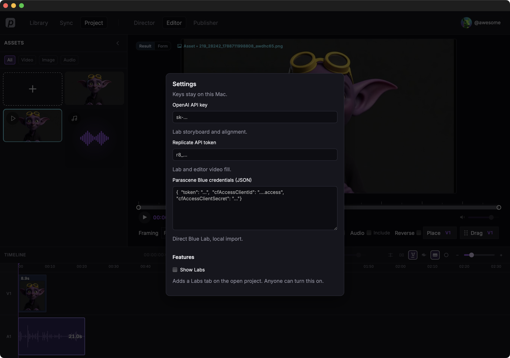

Settings
Keys, Labs, timeline preview, and whether the app can see FFmpeg. Everything here lives on this computer — Sync does not copy Settings.
Open Settings
- Click your avatar in the top bar (the account menu).
- Click Settings.

OpenAI API key
Lab uses this for storyboard and alignment. Paste a key that starts
with sk-, then Save.
Replicate API token
Lab and Editor video fill. Paste a token that starts with
r8_, then Save. If one is already stored,
the field says Configured — paste again to replace it, or click
Clear Replicate token to remove it now.
Parascene Blue credentials
JSON for Direct Blue Lab and local import. Paste the JSON, then Save. If credentials are already stored, paste again to replace them, or click Clear Blue credentials to remove them now.
Show Labs
Adds a Labs tab on the open project. Anyone can turn this on. The checkbox applies as soon as you click it — you do not need Save.
Editor preview
Timeline preview quality: Low, Medium, or High. This is playback in Editor only. Export is unchanged. The slider applies as soon as you move it.
Local tools
FFmpeg, Demucs, and Whisper. Each one says ready or missing, and shows the path when it is found. After you install something, click Re-check. Install demucs can run from here. Open LOCAL_TOOLS.md opens the longer install notes when that file is on disk.
FFmpeg is required for most media work. Local tools has the install steps.
Save and Cancel
Save stores the keys and closes the dialog. Cancel (or Escape, or click outside) closes without storing key changes. Show Labs and Editor preview already stuck when you changed them.
Where to go from here
Local tools — install FFmpeg if Settings says missing.